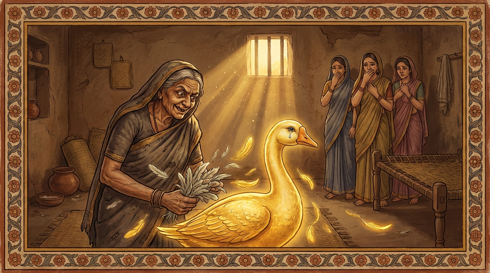

6. ස්වර්ණහංස ජාතකය (136)
“යමක් ලැබුණේ ද එයින් සතුටු විය යුතුය” යන මේ ජාතකය භාග්යවතුන් වහන්සේ ජේතවනාරාමයේ වැඩ වසන සමයෙහි ථුල්ලනන්දා නම් මෙහෙණිය අරබයා දේශනා කළ සේක. සැවැත් නුවර එක්තරා උපාසකයෙක් භික්ෂුණී සංඝයාට ලුහුණු (සුදුලූනු) පවාරා, “ඉදින් මෙහෙණියන් පැමිණියහොත් එක් අයෙකුට ලුහුණු මිටි දෙක තුනක් බැගින් දෙන්න” යැයි කෙත් රැකවලුන්ට නියෝග කළේය. එතැන් පටන් භික්ෂුණීහු ලුහුණු ලබා ගැනීම පිණිස ඔහුගේ නිවසට ද කෙතට ද ගියහ. ඉක්බිති එක් උත්සව දිනක ඔහුගේ නිවසේ තිබූ ලුහුණු අවසන් විය. ථුල්ලනන්දා මෙහෙණිය පිරිවර සමඟ නිවසට ගොස් “ඇවැත්නි, ලුහුණු වලින් ප්රයෝජනයක් ඇතැ”යි කීවාය. එවිට “නැත ආර්යාවනි, ගෙනෙන ලද ලුහුණු අවසන් විය. කෙතට වැඩම කරන්නැ”යි කියන ලදී. ඈ කෙතට ගොස් පමණ නොදැන (අධිකව) ලුහුණු ගෙන්වා ගත්තාය. එවිට කෙත් රැකවලා “කෙසේ නම් මෙහෙණියෝ පමණ නොදැන ලුහුණු ගෙන යන්නහු දැ”යි දොස් කීවේය. ඔහුගේ කතාව අසා අල්පේච්ඡ වූ භික්ෂුණීහු ද, ඒ අසා භික්ෂූහු ද උරණ වූහ. උරණ වී භාග්යවතුන් වහන්සේට මේ කාරණය දැන්වූහ. භාග්යවතුන් වහන්සේ ථුල්ලනන්දා මෙහෙණියට ගර්හා කොට, “මහණෙනි, මහිච්ඡ (අධික ආශා ඇති) පුද්ගලයා වනාහි වැදූ මවට ද අප්රිය වේ, අමනාප වේ. නොපැහැදුණවුන් පැහැදවීමට හෝ, පැහැදුණවුන්ගේ ප්රසාදය වැඩි දියුණු කිරීමට හෝ, නූපන් ලාභ උපදවා ගැනීමට හෝ, උපන් ලාභ ස්ථිර කර ගැනීමට හෝ ඔහු සමත් නොවේ. එහෙත් අල්පේච්ඡ පුද්ගලයා වනාහි නොපැහැදුණවුන් පැහැදවීමටත්, පැහැදුණවුන්ගේ ප්රසාදය වැඩි දියුණු කිරීමටත්, නූපන් ලාභ උපදවා ගැනීමටත්, උපන් ලාභ ස්ථිර කර ගැනීමටත් සමත් වේ” යනාදී ක්රමයෙන් භික්ෂූන්ට ඊට අනුරූප ධර්මය දේශනා කොට, “මහණෙනි, ථුල්ලනන්දා දැන් පමණක් නොව පෙරත් අධික ආශා ඇත්තියකි” යයි වදාරා අතීත කතාව ගෙනහැර දැක්වූ සේක.
අතීතයේ බරණැස් නුවර බ්රහ්මදත්ත රජු රාජ්යය කරන කල්හි බෝධිසත්ත්වයන් වහන්සේ එක්තරා බමුණු කුලයක උපන්හ. ඔහු වැඩිවියට පත් වූ කල්හි සමාන ජාති ඇති කුලයකින් බිරිඳක් පාවා ගත්තේය. ඇයට නන්දා, නන්දාවතී සහ සුන්දරීනන්දා යැයි දියණියෝ තිදෙනෙක් වූහ. ඔවුන් පතිකුලයට යන්නට පෙරම බෝධිසත්ත්වයන් වහන්සේ කළුරිය කොට රන් හංස යෝනියෙහි උපන්හ. ඔහුට පෙර ජාති සිහි කරන නුවණ ද පහළ විය. හෙතෙම වැඩිවියට පත් වූයේ රන්වන් පියාපත්වලින් ගැවසුණු, අලංකාරයට පත් විශාල ශරීරය දැක, “මා කොහි සිට චුත වී මෙහි උපන්නෙම් දැ”යි ආවර්ජනය කරන්නේ, මනුෂ්ය ලෝකයෙන් පැමිණි බව දැන ගත්තේය. නැවත “මාගේ බැමිණිය සහ දියණියන් කෙසේ ජීවත් වන්නෝ දැ”යි විමසා බලන කල්හි, ඔවුන් අනුන්ට බැලමෙහෙවර කරමින් දුකසේ ජීවත් වන බව දැන මෙසේ සිතුවේය: “මාගේ ශරීරයේ රන් පියාපත් ඇත. ඒවා (රන්කරුවන්ගේ) කෙටීම් හා ගැටීම්වලට ඔරොත්තු දෙන වටිනාකමින් යුක්තය. මම මෙයින් ඔවුන්ට එක බැගින් පියාපතක් දෙන්නෙමි. එයින් මාගේ බිරිඳත් දියණියෝත් සුවසේ ජීවත් වන්නාහ.” හෙතෙම එහි ගොස් ගෙයි මුදුනෙහි (පියස්සෙහි) ලැගුම් ගත්තේය. බැමිණිය සහ දියණියෝ බෝධිසත්ත්වයන් දැක “ස්වාමීනි, කොහි සිට පැමිණියෙහි දැ”යි විචාළහ. “මම ඔබගේ පියා වෙමි. කළුරිය කොට රන් හංස යෝනියෙහි උපන්නෙමි. ඔබ දැකීම පිණිස පැමිණියෙමි. මෙතැන් පටන් ඔබ අනුන්ට බැලමෙහෙ කොට දුකසේ ජීවත් වීම අවශ්ය නොවේ. මම ඔබට වරකට එක් පියාපත බැගින් දෙන්නෙමි. එය විකුණා සුවසේ ජීවත් වන්න” යැයි පවසා එක් පියාපතක් දී ගියේය. හෙතෙම මේ ක්රමයෙන් අතරින් පතර පැමිණ එක් පියාපත බැගින් දෙයි. බැමිණිය සහ දියණියෝ ඉන් පොහොසත් වී සැපවත් වූහ.
ඉක්බිති එක් දිනක් ඒ බැමිණිය දියණියන් අමතා, “දරුවනි, තිරිසනුන්ගේ සිත දැනගැනීම අපහසුය. ඇතැම් විටෙක ඔබගේ පියා නැවත මෙහි නොඑන්නට පුළුවන. එබැවින් දැන් ඔහු පැමිණි විටෙක සියලු පියාපත් ඉදිරිා ගනිමු” යැයි කීවාය. එවිට දියණියෝ “එසේ කිරීමෙන් අපගේ පියා පීඩාවට පත් වන්නේය” යැයි කියා ඊට එකඟ නොවූහ. නමුත් බැමිණිය අධික තෘෂ්ණාව නිසා නැවත එක් දිනක ස්වර්ණහංස රාජයා පැමිණි කල්හි, “ස්වාමීනි, මෙහි එන්නැ”යි කියා තමා සමීපයට පැමිණි ඔහු දෑතින් අල්ලාගෙන සියලු පියාපත් ඉදිරුවාය. එහෙත් බෝධිසත්ත්වයන්ගේ කැමැත්තෙන් තොරව බලහත්කාරයෙන් ගත් බැවින්, ඒ සියලු පියාපත් (වටිනාකමක් නැති) කොකුන්ගේ පියාපත් බඳු විය. බෝධිසත්ත්වයන්ට පියාපත් විහිදා ඉගිලී යාමට නොහැකි විය. ඉක්බිති ඇය ඔහු මහා කළයක බහා පෝෂණය කළාය. ඔහුට නැවත පියාපත් වැඩුණේ නමුදු ඒවා සුදු පැහැති විය. හෙතෙම පියාපත් වැඩුණු පසු ඉගිලී තමා වසන ස්ථානයටම ගිය අතර නැවත නොපැමිණියේය.

ශාස්තෘන් වහන්සේ මේ අතීත කතාව ගෙනහැර දක්වා, “මහණෙනි, ථුල්ලනන්දා දැන් පමණක් නොව පෙරත් අධික ආශා ඇත්තියක් වූවාය. මහිච්ඡතාව (අධික ආශාව) නිසා එදා රනින් පිරිහුණාය. දැන් තමාගේ මහිච්ඡතාව නිසාම ලුහුණු වලින් ද පිරිහෙන්නීය. එබැවින් මෙතැන් පටන් ඇයට ලුහුණු කෑමට නොලැබෙනු ඇත. ථුල්ලනන්දා මෙන්ම ඇය නිසා සෙසු භික්ෂුණීහු ද නොලබන්නාහ. එබැවින් බොහෝ දේ ලැබුණ ද පමණ දැනගත යුතුය. ස්වල්පයක් ලැබුණ ද ලැබුණු දෙයින් සතුටු විය යුතුය. අධිකව නොපැතිය යුතුය” යැයි වදාරා මෙම ගාථාව දේශනා කළ සේක.
“යමක් ලැබුණේ ද එයින් සතුටු විය යුතුය. මක්නිසාද යත් අධික ලෝභය පවකි (ලාමකය). හංස රාජයා අල්ලා ගැනීම හේතුවෙන් (බැමිණිය) රනින් පිරිහුණාක් මෙනි.”
එහි තුට්ඨබ්බං යනු සතුටු විය යුතුය යන්නයි.
භාග්යවතුන් වහන්සේ මෙය වදාරා නොයෙක් ආකාරයෙන් ගර්හා කොට, “යම් භික්ෂුණියක් ලුහුණු අනුභව කරයි නම් පාචිත්තිය ඇවැතක් වේ” යැයි ශික්ෂාපදය පනවා ජාතකය සමාධාන කළ සේක. “එකල බැමිණිය වූයේ මේ ථුල්ලනන්දාය. දියණියන් තිදෙනා වූයේ දැන් සිටින සොහොයුරියන් තිදෙනාය. ස්වර්ණහංස රාජයා වූයේ මම ම වෙමි.”
හයවන ස්වර්ණහංස ජාතක වර්ණනාවයි.